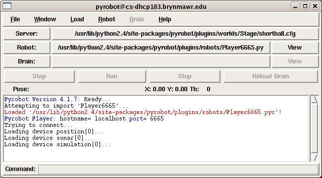
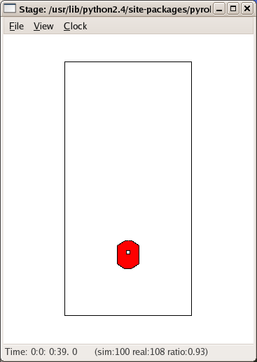
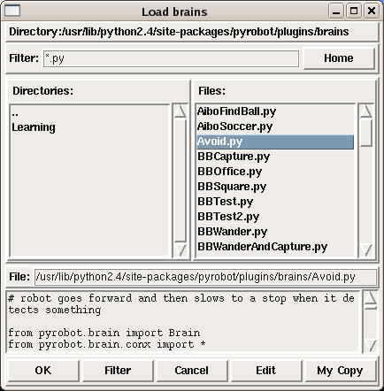
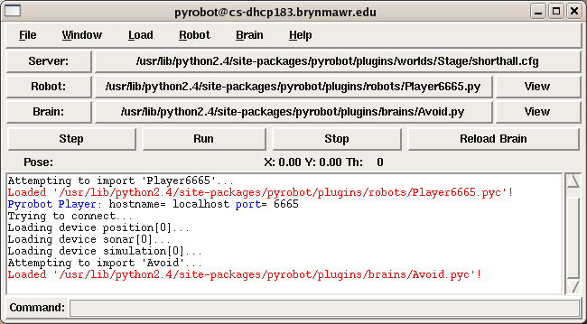

|
|||||||
| [ Home ] | [ Software ] | [ Curriculum ] | [ Hardware ] | [ Community ] | [ News ] | [ Publications ] | [ Search ] |
|
BrainsAny program that controls a robot (physical or simulated) is referred to as a brain. It is written in Python using Pyro classes. See PyroModulePythonIntro for a quick introduction to the Python Language. Programming a brain usually involves extending existing class libraries. The libraries help simplify robot-specific features and provide insulation from the lowest level details concerning hardware drivers. In fact, the abstraction provided uniformly accommodates the use of actual physical robots or their simulations even though vastly different drivers and communication protocols may be used underneath the abstraction layer. Consequently, a robot experimenter need only concentrate on the behavior-level details of the robot. Robots may feature a disparate set of sensors and movements, and yet, depending on the specific robots or simulators used, Pyro provides a uniform way of accessing those features without getting bogged down by low-level details. In this section, we will introduce you to loading, running and building robot brains in Pyro. Each brain is really a complete experiment into some type of robot activity. For an example brain, we will use one that makes the robot wander around its environment without bumping into anything. This behavior can be easily accomplished if you have access to the robot's range sensors (to detect oncoming obstacles) and motors (to move forward/backward or turn). Our goal here is to learn how to load an already written brain program and control a robot with it. The details of how the brain is written are not important at this point. The entire content following this section is devoted to building various brains that employ different control paradigms. Once you have learned how to load and run a brain on a robot, we will introduce you to the basic structure of a brain program.
Loading and Running a BrainAs you saw in The Pyro Interface, you execute steps 1-4 below to start running Pyro and to connect to a robot, now we will add two additional steps to run a brain:
If you wanted to connect to a real robot instead of a simulator, you would skip the optional step. For this example, we will be using the Stage simulator with the robot running in the shorthall.cfg world. If you have forgotten how to start Pyro, specify the Stage simulator, and the world to it, you should review the section ["The Pyro Interface"] before proceeding. Go ahead, start Pyro, and specify the Stage simulator to it with the world file shorthall.cfg specified. Also, specify that you will be using the Player6665.py robot driver. At this point, you should have the two windows shown below:   Notice that the Pyro console window shows that it has loaded Stage, and has loaded the robot driver.
Load a robot ''brain''The controller program that makes up the brain is written in Python, using the extensions to the specific robot class used above. As mentioned earlier, we have already written a simple controller that does obstacle avoidance using a direct control paradigm. To load the Python code to do obstacle avoidance, press the Brain button in the Pyro window and you will get the Load Brains pop-up window:  Several robot controllers/brains are listed here. You can also navigate to another directory (you will have one once you start writing your own controller programs) to load the programs from. Of the several options shown above, the following two are worth noting:
Select the file Avoid.py (as shown above) and press the OK button. Once again, in the Pyro console you will see a message declaring the success/failure of the command. If successfully loaded, your Pyro window will be as shown below:  Now you are ready to run the robot using this brain.
Run the robot in the shorthall world using the Avoid.py brainJust click on the Run button in the Pyro window! You will see the robot navigating around in the shorthall world. You can use the mouse control operations to relocate the robot in the world (it is a simulation, after all!!) and/or re-orient its direction as it is moving. The Stop button in the Pyro window will stop the robot. You can also use the Step button to make the robot run one step. That is really all there is to it. Regardless of which robot you use, whether it is a simulation or a physical robot, you will use the same steps. At this point, you must be curious to peek into the brain program to see what it looks like. Go ahead and take a look by clicking on the button with brain's name in the Pyro window. An emacs editor window will pop-up with the code in it. Again, don't try to make complete sense of it yet as that is our next task. We will begin to demystify the brain next.
Structure of a Pyro BrainThe basic structure of a robot control program is as shown below:
#import the appropriate brain superclass
from pyrobot.brain.<SomeBrainClass> import *
# Define the robot's brain class
class <BrainName>(<SomeBrainClass>):
def setup(self):
# This is the default constructor (optional) method
# All code here is run once when the brain is loaded
# You can initialize fields, and start devices here
def step(self):
# All brains must have a step method
# This method is executed 10 times/sec
# This is where you define the main control 'loop'
def destroy(self):
# This is the default destructor (optional) method
# Each time a brain is destroyed, this method is executed
# If you start devices in setup, you should stop them here (see text below)
# Define other methods of this class as appropriate
# end of <Brain Name> class
# Create a brain instance for the robot
def INIT(engine):
brain = <BrainName>('BrainName', engine)
print engine.robot.name + " robot now has " + brain.name + " brain."
return brain
where <SomeBrainClass> is either Brain or a subclass of the Brain class depending on the kind of control paradigm you decide to use (see below). <BrainName> is defined by you. The class pyrobot.brain and its subclasses are a part of the Pyro Library and can be used to instantiate a specific control regime for the robot program. The setup method is executed each time a brain instance is created. Thus it is a good place to define and initialize the local attributes/fields of this class. You can also start the needed devices here. However, if you do, you should make sure to stop them in the destroy method, which is a destructor method. The destroy method is called each time an instantiated brain is destroyed. When you reload a brain file, the destroy method is implicitly called before the new brain file is loaded. The step method is where all of the main action is. Statements contained in this method are executed 10 times/second. That is, when you place your control statements here, they will be repeatedly executed 10 times/second. The step method is the control loop for your robot. This is the method executed when you press the Step button in the Pyro window. There are many different control paradigms for controlling a robot's behavior. Pyro is designed to explore different control paradigms. Typically, each new control paradigm will be a subclass of the Brain class. Currently, the following control paradigms have been implemented in Pyro:
As you proceed through the various modules that follow, you will learn more about the structure of a robot's brain. For now, it would be sufficient to spend some time looking at an existing brain program (see exercise below). Exercise BBSquare: Load the BBSquare.py brain and observe the behavior. Exercise Brain Surgery: The easiest way to start learning about the encoding of the brain is to be able to examine and modify the existing code. If you have the BBSquare.py brain loaded, just click on the name of the file in the Pyro window and you will get its contents displayed in an emacs window. Save this brain in your own home directory. Then modify it so that it transcribes a circle instead of a square. Next, load this brain. Try it!
Starting devices on start-up, reduxAs mentioned in the last section, some thought must be given to how you want devices loaded and unloaded in your code. In Pyro, you load a robot once, then you load your control program (brain). You can then reload your control program again if you make changes to it. However, if you load a device in, say, the setup() method of your control code, then you don't want it to load again. Devices, once they are started, remain active for the remainder of the session. In fact, you will run into problems if you try to start devices that are already active. This will of course happen every time you reload your brain program. There are three ways to deal with this problem. First, add a destroy() method to your code, and remove any device there that was started in setup, like this:
class myBrain(Brain):
def setup(self):
self.robot.startDevice("ptz")
def destroy(self):
self.robot.removeDevice("ptz") # removeDevice can take an ID or type
...
Another option is to make sure that you only ever load a device once. This method works nicely with some camera types (V4LCameras) that are currently a little picky about stopping and starting quickly:
...
class VisionBrain(Brain):
def setup(self):
if not self.robot.hasA("camera"):
self.camera = self.robot.startDevice("V4LCamera0")
self.camera.addFilter( process )
def step(self):
# do something with the camera processed data:
print self.camera.filterResults
In this code, the function self.robot.hasA("camera") has been used. If the robot does have a camera, the function returns 1. If there is no camera, the function returns 0. In this manner, you only have to load a device once (the first time), and it just stays around after that. Finally, you can load your devices outside of the brain, either manually via the GUI or, by starting it with the command line switch -d. This command line flag allows you to specify a list of devices. The list is a set of device names (either builtIn or filenames) that are separated by commas with no spaces:
pyro -r Player6665 -d ptz,BlobCamera
Further Reading
|
| [ Home ] | [ Software ] | [ Curriculum ] | [ Hardware ] | [ Community ] | [ News ] | [ Publications ] | [ Search ] |
 View Wiki Source | Edit Wiki Source | Mail Webmaster
View Wiki Source | Edit Wiki Source | Mail Webmaster | |||||||